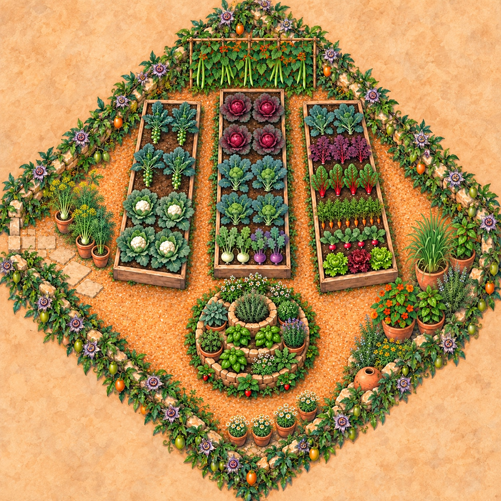
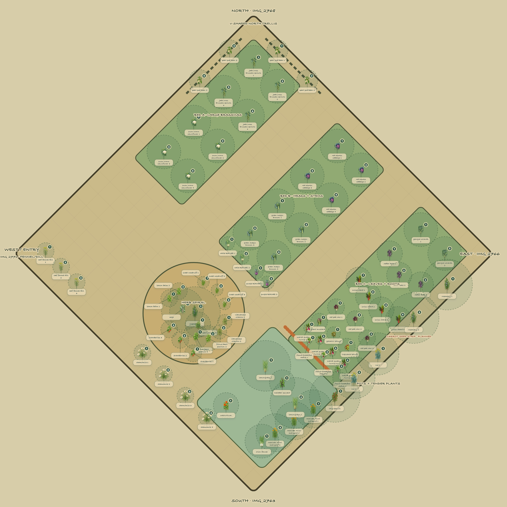

Upper-left · 8 × 4 ft
Jade Cross Brussels sprouts ×4 and Snow Crown cauliflower transplants ×4 in two rows at about 24 inches.
South Texas garden planning · Zone 9A
A corrected 20 × 20-foot plan built around the beds actually constructed: four 8 × 4-foot beds, two touching 8 × 3-foot sections divided by a beam, the existing six-foot circular herb garden, 81 established or potted plants, four seed batches, and hand watering.
Corrected from IMG_2838 and field measurements
The 20-foot depth is exact: a 2-foot top gap, an 8-foot upper row, a 2-foot center path, and an 8-foot lower row. The upper row contains two 8 × 4-foot beds around the six-foot herb garden. The lower row contains an 8 × 4, an 8 × 6 split by a beam into two touching 8 × 3 sections, and another 8 × 4 bed.
Open or print the simplified layout by itself →
Jade Cross Brussels sprouts ×4 and Snow Crown cauliflower transplants ×4 in two rows at about 24 inches.
Keep the established herb garden and its dry-crown, moderate-middle, and moist-base watering tiers.
Green Magic broccoli transplants ×4 and Red Express cabbage ×4 at 18–24 inches.
Georgia collards ×2, Redbor kale ×3, and Swiss chard ×4 for repeated outer-leaf harvests.
The dividing beam creates two management sections: kohlrabi, pak choi, and mustard on one side; lettuce, turnips, and radishes on the other.
Two 6-foot carrot rows, one 6-foot scallion band, two broccoli-seed stations, and two cauliflower-seed stations.
| Seed batch | Reserved space | Sow | After emergence |
|---|---|---|---|
| Carrots | 18 in × 6 ft; two rows | ¼–½ in deep | Thin to about 2 in |
| Scallions | 2-in-wide × 6-ft band | ¼–½ in deep | Thin to about 1 in |
| Broccoli | Two labeled nursery stations | 2–3 seeds each, ½ in deep | Thin to one; transplant later at 18–24 in |
| Cauliflower | Two labeled nursery stations | 2–3 seeds each, ½ in deep | Thin to one; transplant later at 18–24 in |
Still worth buying
The current inventory already has ample large crops. Any new purchases should extend the winter harvest without overloading the constructed lanes.
The complete garden
This unified watercolor rendering follows the measured 20 × 20-foot field survey: north at the upper corner, east at right, south at the lower corner, and the west entrance/fennel-dill corner at left. The established passionflower-vine border remains its own perimeter layer.


The measured grid
The field survey is now built into the drawing: north is the upper corner, east is right, south is the lower corner, and the west/entrance corner is left. The fennel/dill pots remain movable beside—but never across—the west entrance.
Every watercolor label is one individual plant; the carrot line is a seed batch. Repeated cultivars are numbered one by one, and the dashed circle beneath each image shows that specimen’s planned mature canopy or contained-pot footprint at the same scale as the 20-foot grid. The four-corner survey controls orientation; field observation confirms full morning sun across the garden and afternoon shade over the spiral/cabbage/collard half by 1:54 PM. The watercolor illustrations are AI-generated decorative planning aids—not diagnostic identification images.
Twenty-four-inch centers protect airflow and leave room for full heads and sprouts. Put fine insect mesh on immediately after planting.
Cabbage and broccoli get the deeper rows; compact kohlrabi sits along an accessible path edge for easy stem checks.
Leaf crops and quick roots use closer spacing. The carrot seed strip joins the accessible low-crop edge and is thinned after emergence rather than counted as established plants.
Individual herb placement
The diagram assumes north is at the top. One rosemary is the clipped crown specimen; sage and compact marjoram occupy the two high shoulders. The mound descends toward a cooler, moister north opening. The whole spiral receives direct sun earlier in the day; its later tree-canopy shade provides relief from South Texas afternoon heat.
| Keep outside the spiral | Exact placement | Why |
|---|---|---|
| Rosemary ×2 | Dry east/southeast perimeter, 36–48 in on center | The third rosemary is the clipped crown specimen; moving the shrubs east keeps mature growth out of the west entrance. |
| Rue ×2 | Dry east perimeter, 30–36 in apart and away from the west entrance | Woody 2–3 ft plants; gloves are advised when handling foliage. |
| Mexican mint marigold ×3 | East/northeast pollinator edge, 24–30 in apart | Tall perennial mass stays north/east of the small spiral herbs. |
| Lemongrass ×2 | Separate 10–15 gal containers, south/east of the spiral | Large, thirsty, frost-tender clumps need far more root room. |
| Orion fennel ×1 | Own container outside the spiral | Large upright plant; isolation simplifies space and watering. |
| “Leaf fennel/dill” ×3 | Three individual pots beside the west entrance until the tag is confirmed | Dill and leaf fennel have different mature sizes and permanence; keep the doorway clear. |
| Chamomile ×4 | Four movable pots along the sunny south path edge until German versus Roman type is confirmed | German chamomile may stand upright while Roman chamomile remains a low groundcover. |
| Nasturtium ×1 | Movable pot; place only where field observation confirms afternoon shade | Prevents heat stress and keeps the vine from smothering strawberries or middle herbs. |
Companion-planting audit
The layout used shared moisture, mature size, shade, airflow, harvest access, and pest protection. It did not assume that one scented herb reliably protects another crop.
Brassicas share irrigation and can sit beneath one insect-mesh system. Quick roots occupy accessible edges. Tall beans stay north so they do not shade the beds. Dry woody herbs are separated from thirsty greens.
Grouping brassicas also concentrates brassica pests and disease. Fine mesh, weekly leaf checks, sanitation, and next-season rotation matter more than aromatic neighbors.
Fennel is containerized for size and self-seeding; aggressive lemon balm is contained; rue stays away from paths; two rosemary shrubs and both lemongrasses remain outside because their mature dimensions are incompatible with a six-foot spiral.
Plant-by-plant evidence
“Best neighbor” means compatible sun, water, mature form, pest protection, or harvest access in this particular plan. It does not claim unproven chemical benefits. Source numbers link to the reviewed ledger below.
Lower-right 8 × 4 seed bed · planned Zone IV sowing
Lower-right 8 × 4 seed bed · one 2-inch-wide by 6-foot band
Lower-right 8 × 4 seed bed · two labeled backup stations
Lower-right 8 × 4 seed bed · two labeled backup stations
Crop inventory
The placement rule is practical: compatible water, mature size, light, airflow, frost tolerance, and harvest access outrank companion-planting folklore.
| Zone | Plants | Spacing | Reason |
|---|---|---|---|
| Upper-left · 8 × 4 | Jade Cross Brussels sprouts ×4; Snow Crown cauliflower transplants ×4 | 24 in | Eight large brassicas fit as two rows of four with mature airflow and head access. |
| Upper-right · 8 × 4 | Red Express cabbage ×4; Green Magic broccoli transplants ×4 | 18–24 in | Eight heading brassicas share deep, even moisture, insect mesh, and harvest access. |
| Lower-left · 8 × 4 | Georgia collards ×2; Redbor kale ×3; Swiss chard ×4 | 12–24 in | Nine repeat-harvest greens, with tallest plants kept from shading shorter ones. |
| Lower-center · two 8 × 3 sections | Section 1: white kohlrabi ×2; purple kohlrabi ×2; Red pak choi ×3; Red Giant mustard ×1. Section 2: Galactic lettuce ×1; Tropicana lettuce ×1; Scarlet Queen turnip ×4; French Breakfast radish ×3. | 2–12 in by crop | The beam provides a real management boundary: leafy brassicas and kohlrabi on one side, quick salad/root crops on the other. |
| Lower-right · 8 × 4 | Carrot strip ×1; scallion band ×1; broccoli-seed nursery ×1; cauliflower-seed nursery ×1 | Carrots 2 in; scallions 1 in; cole crops 18–24 in after transplanting | Dedicated shallow-sown seed bed with a gentle watering round and labeled nursery stations. |
| Herb spiral | Rosemary ×1; sage ×1; compact marjoram ×1; basil ×2; Vietnamese cilantro ×2; lemon balm ×2; sweet woodruff ×3; strawberries ×3 | 12–24 in; spreading herbs in sunk pots | Rosemary crown; dry shoulders; moderate middle; moist base; contain aggressive spreaders. |
| Dry east edge | Rosemary ×2; rue ×2; chile pequín ×1; Mexican mint marigold ×3 | 18–48 in | Keeps large or drought-tolerant plants out of wet beds and away from the west entrance. |
| Movable pots | Lemongrass ×2; Malabar spinach ×1; nasturtium ×1; Orion fennel ×1; “leaf fennel/dill” ×3; chamomile ×4 | 8–48 in by plant | Frost protection, label confirmation, isolated fennel, and a dedicated Malabar trellis. |
| V-shaped north trellis | Pearl Pod beans ×4 | Confirm cultivar habit | Use both boundary runs meeting at the north corner only if the label confirms a climbing bean; bush beans belong at a bed edge. |
Hand watering
Forecast rain is not irrigation until it falls. The morning decision should combine measured overnight rain, forecast temperature, wind, plant establishment, container exposure, and a two-inch finger test.
The two upper 8 × 4 beds need deep, even watering at individual root zones. New transplants are checked daily for 10–14 days; established plants are watered only when the upper root zone begins to dry.
Leaf crops, kohlrabi, and quick roots need more frequent checks than the large brassicas. Use the beam as a watering boundary and test each 8 × 3 section separately.
Keep the upper half-inch evenly moist until carrots, scallions, broccoli, and cauliflower emerge. Use a gentle rose and leave unsprouted rows free of mulch.
Rosemary, sage, and marjoram must drain and partly dry between waterings. Water them individually; do not give the whole spiral the same amount.
Basil, Vietnamese cilantro, lemon balm, woodruff, and strawberries prefer evenly moist soil but not saturation.
Check every pot individually. Rosemary and rue dry between waterings; warm-weather lemongrass and Malabar spinach use considerably more. Chamomile needs drainage and should not remain saturated.
One inch over a 4 × 10-foot bed is about 25 gallons. It is a reference—not an instruction to pour 25 gallons at once. Soil, heat, wind, mulch, and actual rain determine the daily portion.
1. Record overnight rainfall. 2. Check today’s high, wind, and rain probability. 3. Test soil two inches down. 4. Check containers and new transplants first. 5. Water slowly at soil level. 6. Skip anything still cool and moist.
Harvest forecasting
Days-to-maturity numbers are useful only when paired with planting dates, whether the crop began as seed or transplant, cultivar labels, weather setbacks, and physical readiness.
Source ledger
Garden-specific placement reflects the listed inventory and 20 × 20-foot footprint. Timing, spacing, and watering principles use Texas A&M AgriLife guidance.
Re-audit before planting
The cool-season vegetable beds, dry upper spiral, contained moist herbs, strawberries, and isolated large herbs remain defensible. The audit found six limits that must govern planting:
Thirty-three horticultural sources were re-audited, including 20 Texas-based sources. Every entry below includes a short direct quotation and states exactly what that quotation does—or does not—support. Texas A&M AgriLife, Texas Master Gardeners, and Garden Style San Antonio control climate, season, water, and local-adaptation decisions. Out-of-state university profiles supply species-specific size, moisture, toxicity, spread, or direct-sowing information.
“Choose a sunny, well-drained location.”
Decision: supports the spiral’s general sun/drainage design and putting perennial herbs where they will not interfere with annual-bed preparation. It does not assign individual spiral positions.
“Rosemary endures hot sun and poor soil once established; too much water can cause root rot.”
Decision: directly supports one rosemary at the sharply drained crown and two in the dry perimeter—not beside moist basil or cilantro.
“Height: 2–6 Feet… Spread: 2–4 Feet… Sun: Full Sun… Water: Dry to Medium.”
Decision: supports a single pruned crown specimen and generous spacing for the two perimeter plants. Three mature rosemary shrubs cannot fit inside a six-foot spiral.
“Common sage prefers full sun and well-drained, medium to dry soils.”
Decision: supports sage on a high, dry shoulder. Its 2–3-foot potential spread means pruning and real separation from rosemary are required.
“Plant Sweet Marjoram in average, dry to medium moisture, well-drained soil in the full sun.”
Decision: supports compact marjoram on the other upper shoulder, above the wetter basil line.
“Basil requires consistent soil moisture in summer… afternoon shade can be substituted for water.”
Decision: supports a lower, separately watered, afternoon-protected position—but not outdoor October planting. Basil should remain movable or be held for warm weather.
“Cold soil and air temperatures can stunt basil growth and can even cause damage and blackened leaves at 50 degrees.”
Decision: confirms the hold: do not treat basil as a durable fall spiral planting.
“Water: High. Prefers moist to wet soil.”
Decision: supports the lower moist tier and individual sunk pots. The same profile calls it winter-hardy only in frost-free zones 9–11, so the pots must remain removable.
“This plant self-seeds and spreads aggressively by rhizomes, so it is best to grow in a container.”
Decision: directly supports separate sunk pots and deadheading rather than planting lemon balm loose in the spiral.
“Its preference is for moist well-drained fertile soil in part to full shade.”
Decision: supports removable pots at the shaded north base only. This is experimental in Schertz heat and should not be installed permanently.
“You need a minimum of six hours of direct sunlight for best results.”
Decision: supports the sunny south apron if a field sun check confirms six hours; excellent drainage and crown-level planting remain mandatory.
“Sun/part shade… growing to 2 feet.”
Decision: supports 24–30-inch spacing on an outer pollinator edge rather than packing three mature plants into the small spiral.
“Height: 2 ft. 0 in. – 4 ft. 0 in.; Width: 2 ft. 0 in. – 3 ft. 0 in.”
Decision: supports two large separate containers outside the spiral. Because it is warm-season, containers must remain movable for cold protection.
“It has an upright, branching habit and can grow 3 to 5 feet high.”
Decision: supports Orion fennel in its own large container for size and seed control—not because of unproven allelopathy claims.
“It grows best… in full sun, but with some afternoon shade in hot summers.”
Decision: invalidates an automatically sunny south-edge location. Place the pot only after afternoon shade from the passionflower border is observed.
“Growth is disappointing when temperatures stay below 80 F.”
Decision: supports an independent sturdy trellis and moist container in warm weather, but not planting it outdoors as an October fall crop.
“Wear long sleeves and gloves when pruning or handling the foliage.”
Decision: supports the dry perimeter away from routine paths and harvest traffic; it also supports explicit handling precautions.
“Vegetable crops must have at least 8 hours of direct sun each day and should be planted where the soil drains well.”
Decision: establishes the ideal benchmark. Field observation confirms equal direct sun across the garden earlier in the day and afternoon shade over one half by 1:54 PM; the current fall-crop placement remains defensible, but heading and vigor should be monitored because the photo alone does not prove eight full hours.
“Sun or shade… eventually growing into a small bush.”
Decision: supports a roomy perimeter position with afternoon relief, not a crowded vegetable bed or the wet spiral base.
“Most cole crops need 18 to 24 inches between plants.”
Decision: directly supports 24-inch cauliflower/cabbage centers and 18–24-inch broccoli spacing. The plan’s 24-inch Brussels-sprout spacing is conservative; AgriLife gives 14–18 inches.
“A short-lived evergreen perennial, best treated as an annual in San Antonio.”
Decision: supports trying one sage on a dry upper shoulder but not designing the permanent spiral around its long-term survival.
“Anecdotal evidence tells us that pairings of specific herbs with specific plants benefit the plants.”
Decision: this source warns against treating companion folklore as proof. The plan uses shared water, light, size, access, and pest-management needs—not magical pairings.
“Turnip… uniform throughout growth.”
Decision: supports consistent hand watering for turnips; the same table identifies establishment as critical for lettuce and establishment/heading for broccoli.
“Rosemary… Root rot in poorly drained soils.”
Decision: reinforces dry rosemary placement. This commercial-crop page provides Texas context, not exact home-garden coordinates.
“The ideal time to plant greens for Central Texas is… September to November.”
Decision: supports planting collards, chard, kale, mustard, and turnip greens now.
Summer: “Plant herbs including basil, oregano, rosemary, lemon balm, sage and thyme.”
Decision: this does not support outdoor October basil. Its fall list instead names cilantro, chives, dill, parsley, and mint. The earlier plan overextended this source.
“Popular cool season herbs… include parsley, fennel, dill, mint and rue.”
Decision: supports fall treatment of confirmed dill/fennel and rue. It replaces the former dead dill-page URL.
“Lemon balm is a vigorous plant that self-sows readily and also spreads from the roots.”
Decision: directly supports separate containers and pruning; the article also says it prefers consistently moist soil.
“Over-watering will kill the plant.”
Decision: supports the dry perimeter; the same article advises gloves if contact dermatitis is a concern.
“Plant tall-growing crops… on the north side of the garden.” “Smaller seeds such as carrot… can be planted about ¼ to ½ inch deep. Plant seeds fairly thickly; once they have sprouted you can thin plants to an optimum stand.”
Decision: supports the V-shaped north bean trellis and the separately tracked carrot seed strip. It also requires bean-habit confirmation before trellising and thinning carrots after emergence.
“Swiss chard… [is] grown for leaf blades and petioles.”
Decision: confirms crop identity and Texas use but does not establish the plan’s spacing; spacing comes from the home-garden guide and mature-access judgment.
“This plant produces erect, branched stems and grows up to 2 feet tall…”
Decision: supports four separate movable pots and rejects treating unidentified chamomile as a permanent low groundcover. The same profile calls for full sun and well-drained soil and notes that it may transplant poorly.
“Plant seeds one-fourth to one-half inch deep… Thin seedlings to one inch apart.”
Decision: supports a separately labeled shallow seed band, steady surface moisture, and one-inch final spacing. Texas timing still comes from the Texas A&M Region IV calendar.